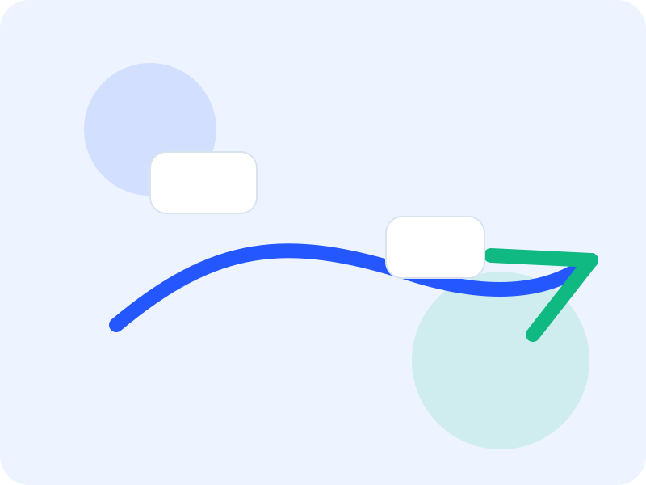
Navigation
자연어 명령을 받아 목표 지점까지 자율 주행합니다.
본 프로젝트는 Unitree Go2 사족 보행 로봇에 최신 Vision-Language-Action 모델인 InternVLA-N1-DualVLN을 이식하여, 사람이 말하는 자연어 명령만으로 로봇이 시각 정보를 해석하고 실제 환경에서 자율 주행하도록 구현한 통합 시스템입니다.
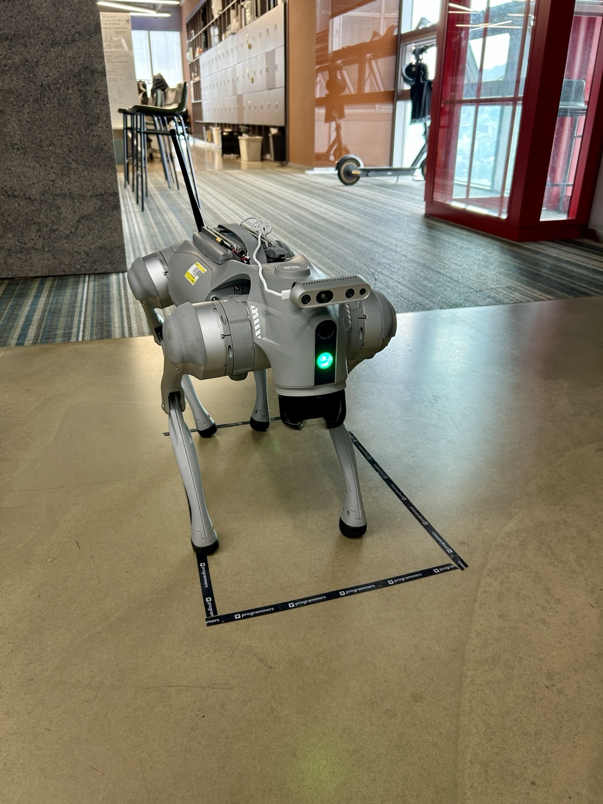
본 프로젝트는 자연어 명령만으로 로봇이 실제 환경을 자율 주행하도록 구현한 프로젝트이며, 모델·센서·에이전트를 하나로 연결한 것이 핵심입니다.
Unitree Go2 사족 보행 로봇에 InternVLA-N1-DualVLN을 이식해, 사람이 말하는 명령만으로 로봇이 시각 정보를 해석하고 주행하도록 만들었습니다.
ROSA 에이전트로 명령을 분해하고, LOVON 일부 구조를 차용해 로봇 본체별 환경 차이를 줄였으며, LiDAR SLAM과 YOLO를 함께 사용해 실환경 안정성을 높였습니다.
기존 VLA 모델은 대체로 휴머노이드급 시점이나 고품질 카메라 환경을 전제로 만들어져 있어, 사족 로봇에 그대로 옮기면 성능이 저하됩니다.
우리는 이러한 환경 차이를 보정하기 위해 LOVON 구조를 InternVLA와 결합하고, ROSA 에이전트를 통해 명령을 분해하는 시스템 레벨 개선을 수행했습니다.
단일 시연이 아니라 네 가지 기능을 하나의 파이프라인으로 통합했습니다.

자연어 명령을 받아 목표 지점까지 자율 주행합니다.
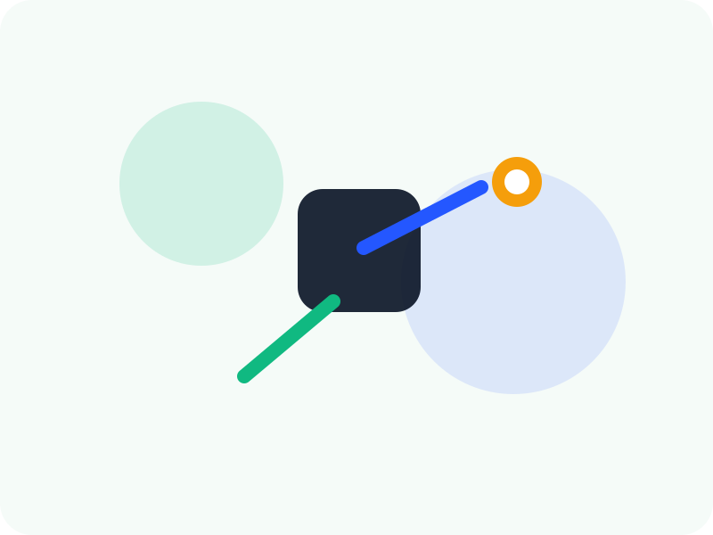
이미지 위 특정 객체를 지시하면 해당 객체로 향합니다.
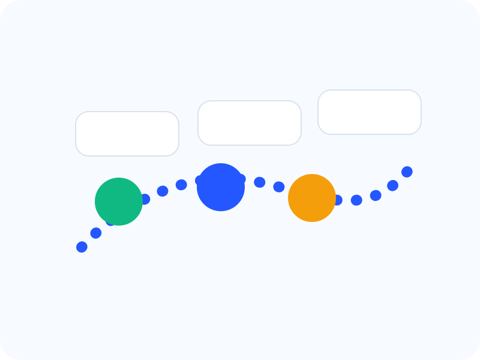
사람이나 물체를 지속적으로 추종합니다.
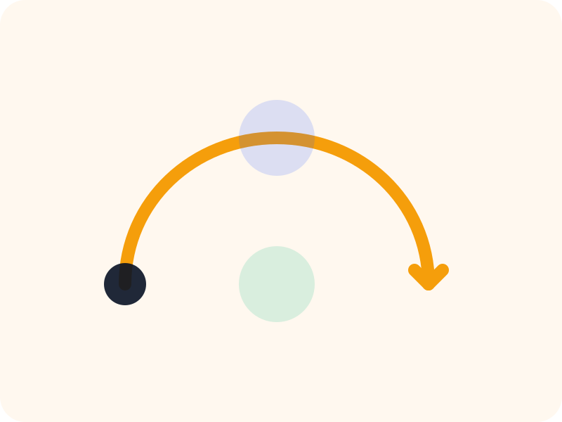
LiDAR SLAM 기반으로 지나온 경로를 자동으로 되짚어 돌아옵니다.
아키텍처 이미지는 나중에 교체할 수 있도록 임시 자리로 두었습니다.
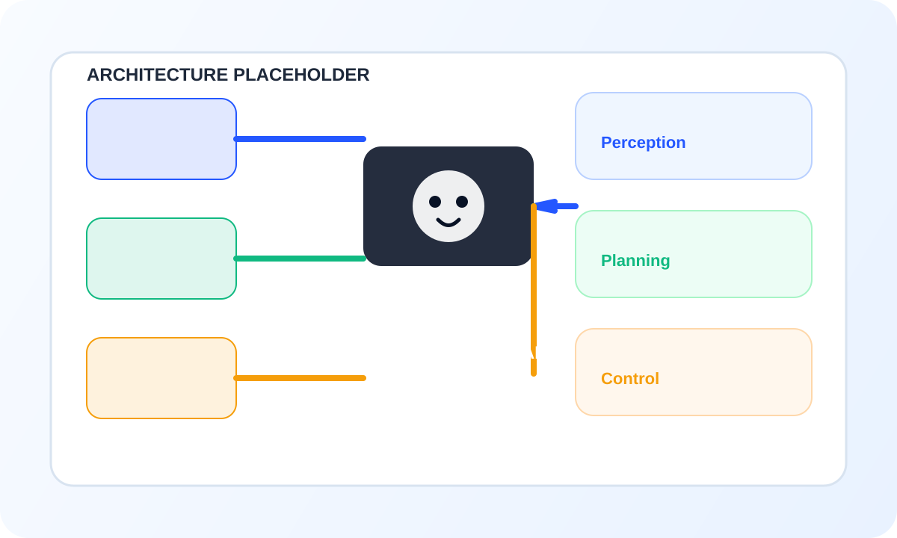
기능이 왜 잘 동작하는지 한눈에 보이도록 나눴습니다.
InternVLA-N1-DualVLN이 메인 추론 엔진입니다.
ROSA Agent가 자연어 명령을 tool 단위로 나눕니다.
YOLO 결과를 pixel goal 형태로 주입해 새로운 task를 추가합니다.
하드웨어, 모델, 프레임워크를 묶어 보여주면 소개 페이지가 훨씬 직관적입니다.
주행 플랫폼으로 사용하는 4족 보행 로봇입니다.
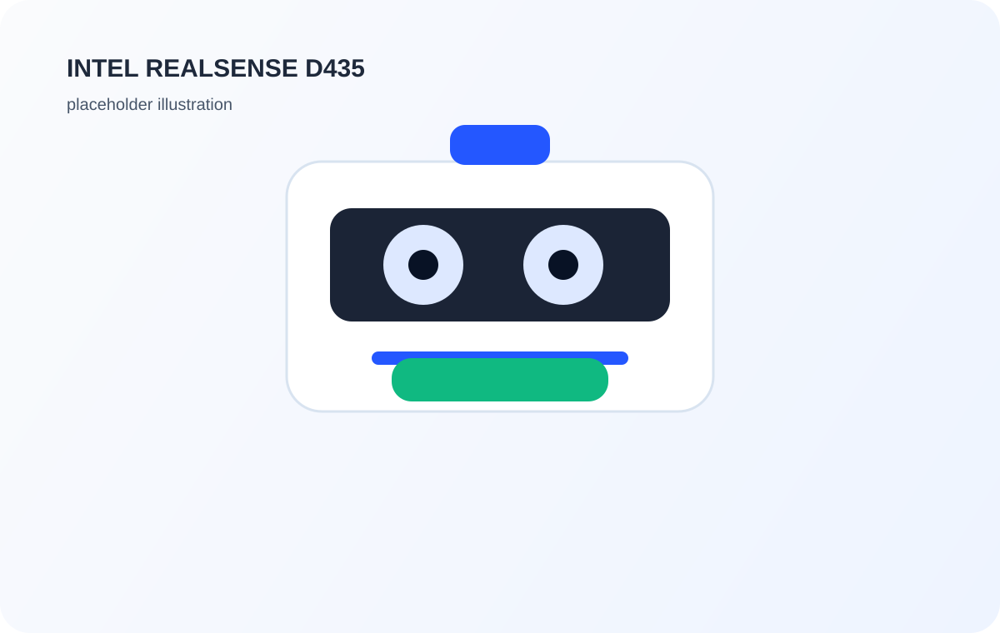
RGB-D 입력을 위한 카메라입니다.
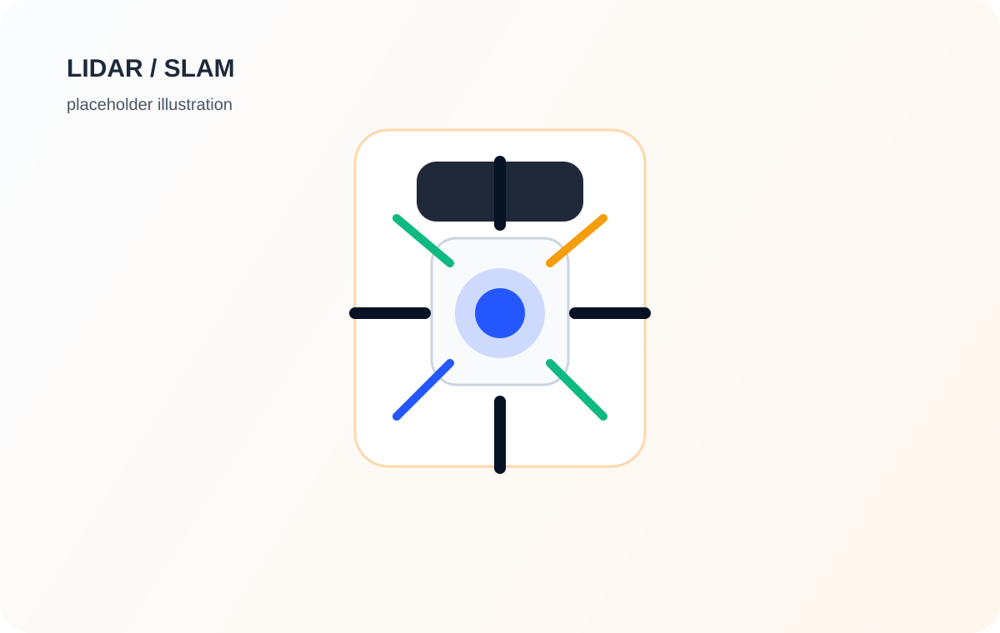
실시간 SLAM과 자율 Backtracking에 사용됩니다.
역할 칸은 비워 두고, 6명이 한 줄로 보이도록 정리했습니다.
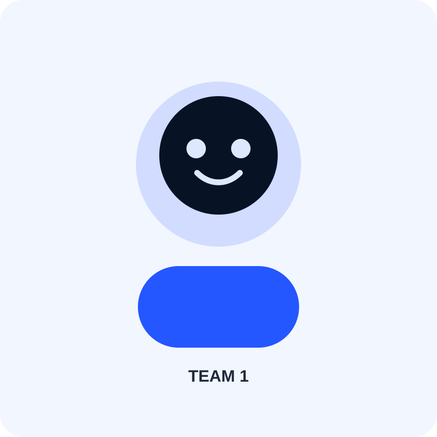
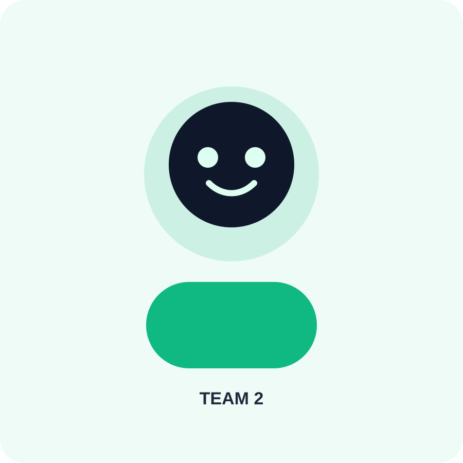
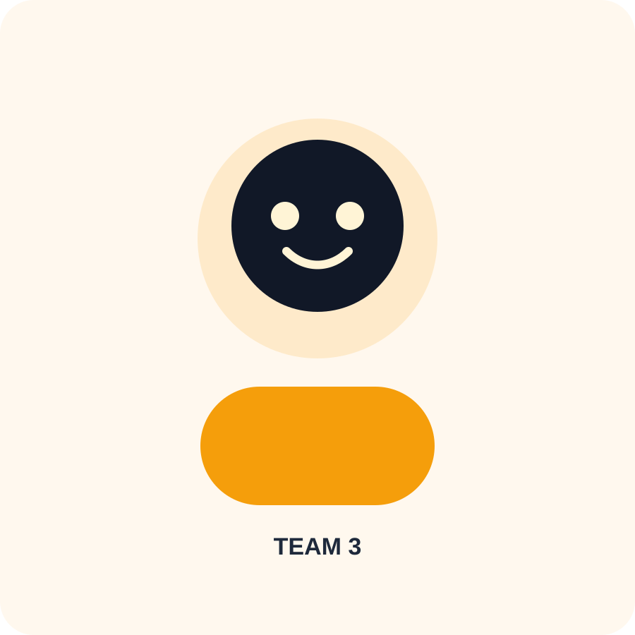
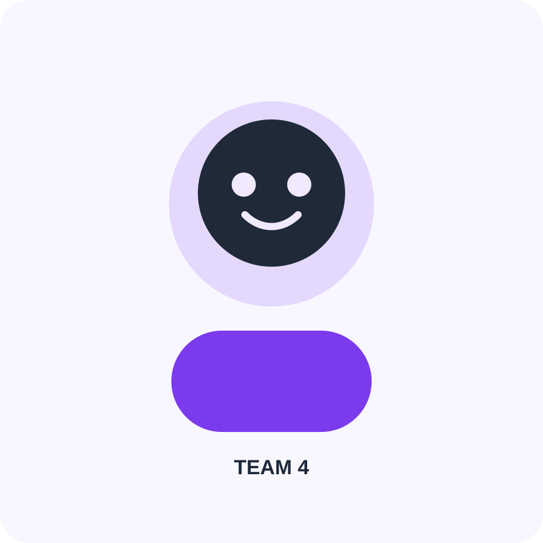
월별로 나눠서 진행 흐름을 읽기 쉽게 정리했습니다.
프로젝트 방향성 결정, ROS2/Zenoh 무선 통신 셋업, InternVLA·LOVON 재현.
Following 결합, 디블러링, LiDAR SLAM 기반 자율 Backtracking 구현.
Pointing 추가, 전체 코드 병합, ROSA와 Qwen3.5-4B 연결, 평가 및 논문화.
하드웨어, 모델, 소프트웨어를 묶어서 정리했습니다.
핵심 기반이 된 논문과 문서를 간단히 적었습니다.